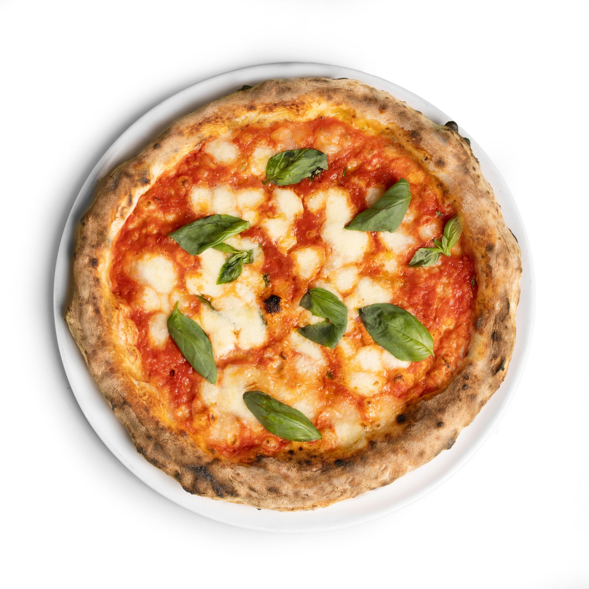
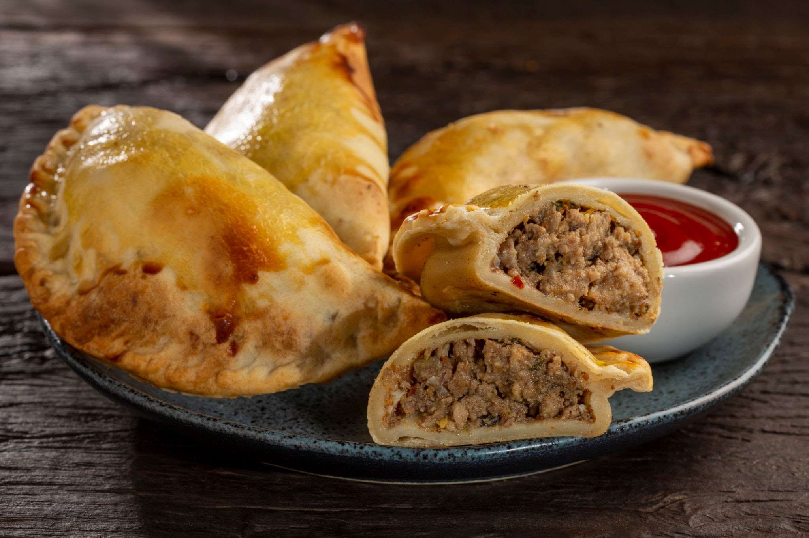
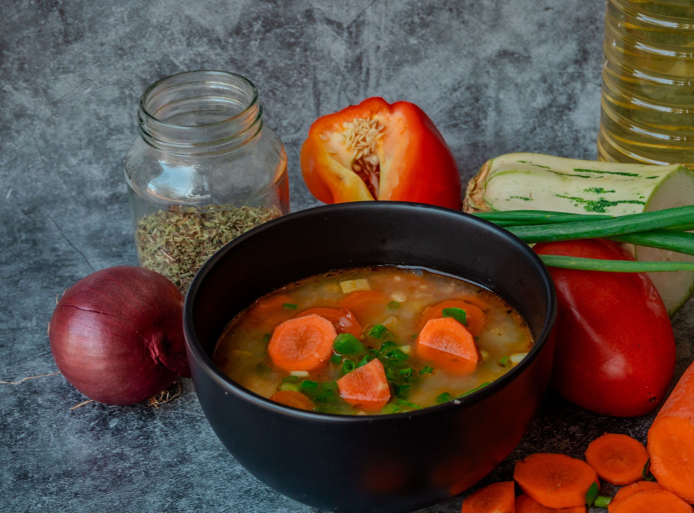
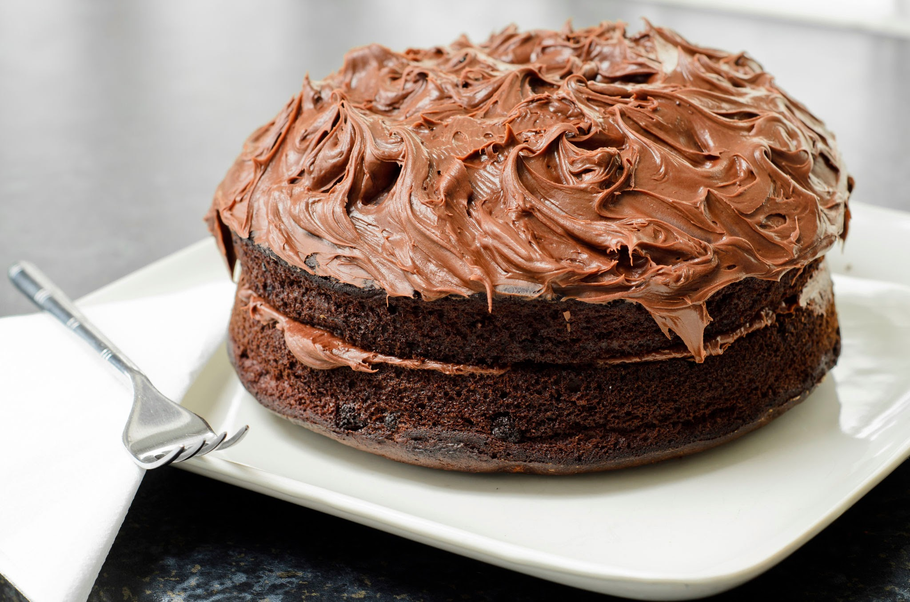
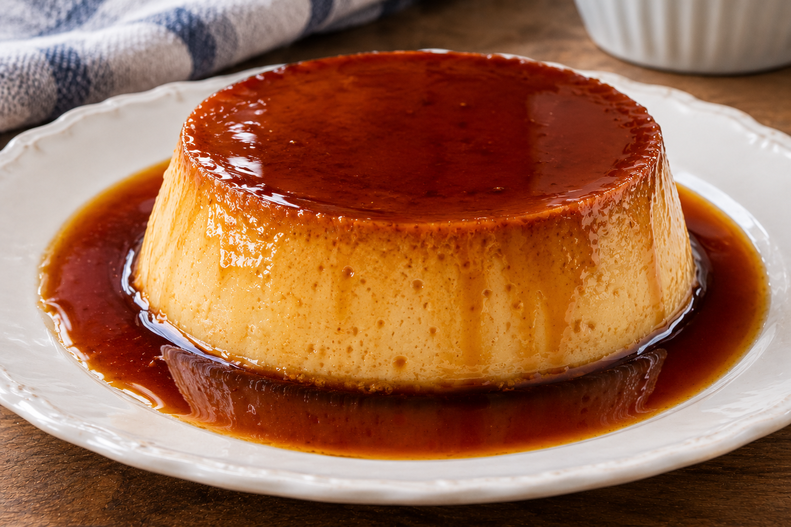
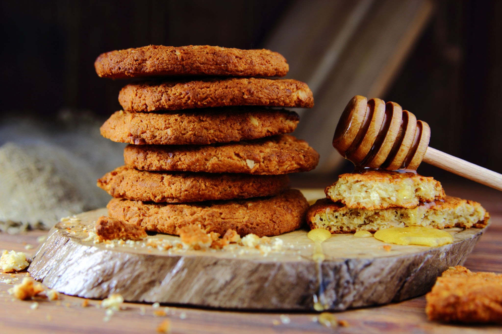

Pizza Margarita







Este sitio es gestionado y mantenido por Chef Ana Martínez, apasionada por la gastronomía moderna y la divulgación de recetas caseras y accesibles para todos.
Si tienes sugerencias o consultas sobre las recetas, puedes comunicarte a través de: